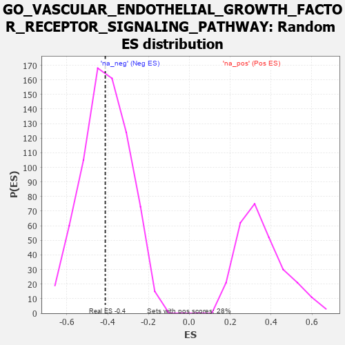

| | | Dataset | 7d |
| Phenotype | NoPhenotypeAvailable |
| Upregulated in class | na_neg |
| GeneSet | GO_VASCULAR_ENDOTHELIAL_GROWTH_FACTOR_RECEPTOR_SIGNALING_PATHWAY |
| Enrichment Score (ES) | -0.41172585 |
| Normalized Enrichment Score (NES) | -1.0037724 |
| Nominal p-value | 0.4924138 |
| FDR q-value | 0.86998814 |
| FWER p-Value | 1.0 |
Table: GSEA Results Summary
 Fig 1: Enrichment plot: GO_VASCULAR_ENDOTHELIAL_GROWTH_FACTOR_RECEPTOR_SIGNALING_PATHWAY
Fig 1: Enrichment plot: GO_VASCULAR_ENDOTHELIAL_GROWTH_FACTOR_RECEPTOR_SIGNALING_PATHWAY
Profile of the Running ES Score & Positions of GeneSet Members on the Rank Ordered List
| PROBE | GENE SYMBOL | GENE_TITLE | RANK IN GENE LIST | RANK METRIC SCORE | RUNNING ES | CORE ENRICHMENT | | 1 | ARNT | | | 357 | 0.741 | 0.0346 | No |
| 2 | SRC | | | 1128 | 0.459 | -0.0130 | No |
| 3 | NCK2 | | | 1131 | 0.458 | 0.0359 | No |
| 4 | SHC2 | | | 2263 | 0.266 | -0.0778 | No |
| 5 | VAV3 | | | 2614 | 0.210 | -0.0992 | No |
| 6 | BRK1 | | | 2805 | 0.183 | -0.1035 | No |
| 7 | SHB | | | 2974 | 0.154 | -0.1082 | No |
| 8 | HGS | | | 3476 | 0.080 | -0.1625 | No |
| 9 | EPN2 | | | 3691 | 0.045 | -0.1846 | No |
| 10 | CRK | | | 4139 | -0.031 | -0.2375 | No |
| 11 | FZD4 | | | 4940 | -0.186 | -0.3181 | No |
| 12 | ELMO2 | | | 5341 | -0.283 | -0.3381 | No |
| 13 | DOCK1 | | | 5908 | -0.438 | -0.3623 | Yes |
| 14 | RAC1 | | | 6036 | -0.484 | -0.3263 | Yes |
| 15 | ROCK1 | | | 6152 | -0.520 | -0.2850 | Yes |
| 16 | CDC42 | | | 6236 | -0.548 | -0.2366 | Yes |
| 17 | PDCD6 | | | 7630 | -1.615 | -0.2385 | Yes |
| 18 | FYN | | | 7881 | -2.622 | 0.0113 | Yes |
Table: GSEA details [plain text format]

Fig 2: GO_VASCULAR_ENDOTHELIAL_GROWTH_FACTOR_RECEPTOR_SIGNALING_PATHWAY: Random ES distribution
Gene set null distribution of ES for GO_VASCULAR_ENDOTHELIAL_GROWTH_FACTOR_RECEPTOR_SIGNALING_PATHWAY